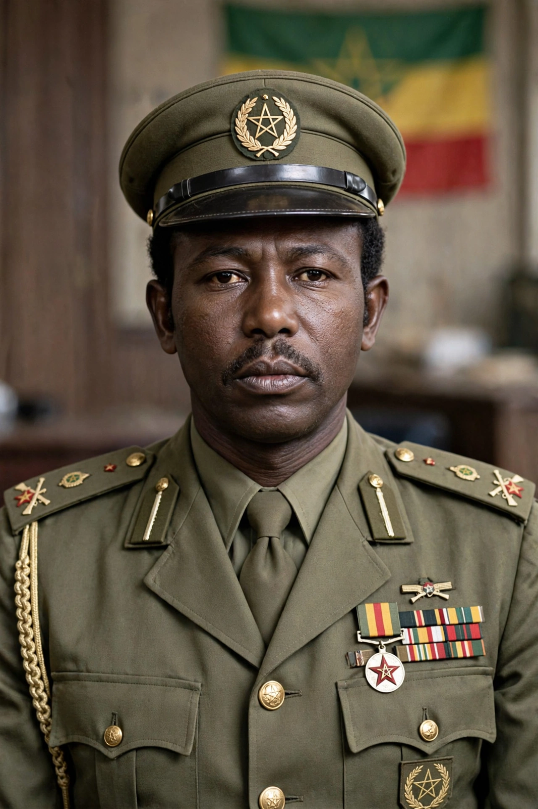

Mengistu Haile Mariam (born 21 May 1937) is an Ethiopian former military officer and politician who ruled Ethiopia from 1977 to 1991. As chairman of the Derg, the socialist military junta that overthrew Emperor Haile Selassie, and later as president of the People's Democratic Republic of Ethiopia, he led one of Africa's most notorious dictatorships. His rule was marked by the Red Terror campaign, in which tens of thousands of people were killed, and by the catastrophic famine of 1983–85. In 2006 an Ethiopian court convicted him of genocide in absentia and sentenced him to death; he lives in exile in Zimbabwe.

| Mengistu Haile Mariam | |
|---|---|
| Born | 21 May 1937, Wolayita, Italian East Africa (present-day Ethiopia) |
| Office | Chairman of the Derg (1977–1987); President of Ethiopia (1987–1991) |
| Party | Workers' Party of Ethiopia |
| Military service | Ethiopian Army; commander in the Ogaden War |
Mengistu was born into modest circumstances and joined the Imperial Ethiopian Army as a youth, rising through a military academy education and training in the United States. After the 1974 revolution deposed Haile Selassie, Mengistu emerged as a leading figure in the Provisional Military Administrative Council, the Derg. In February 1977 he seized the chairmanship after a shootout at the Grand Palace in which the previous Derg leader, Tafari Benti, was killed.
In 1977–78 Mengistu's government waged the Qey Shibir ("Red Terror") against the Ethiopian People's Revolutionary Party and other opponents. Urban death squads killed an estimated 30,000 to 750,000 people; victims' bodies were often left in public places, and families were charged for the bullets used to kill their relatives.
Mengistu repelled Somalia's 1977 invasion of the Ogaden with massive Soviet and Cuban assistance, building one of sub-Saharan Africa's largest armies. His government nationalised land and industry and attempted forced villagisation and collectivisation. During the 1983–85 famine, which killed an estimated 400,000 to over a million people, the regime obstructed relief to rebel-held areas and spent lavishly on its tenth-anniversary celebrations.
As Soviet support evaporated under Mikhail Gorbachev, rebel forces of the EPRDF advanced on Addis Ababa. On 21 May 1991 Mengistu fled to Zimbabwe, where President Robert Mugabe granted him asylum. Ethiopia's transitional government demanded his extradition in vain.
After a twelve-year trial, the Federal High Court in Addis Ababa found Mengistu guilty of genocide in December 2006; he was sentenced to life imprisonment in 2007, and the Supreme Court increased the sentence to death in 2008. Zimbabwe has refused to extradite him.